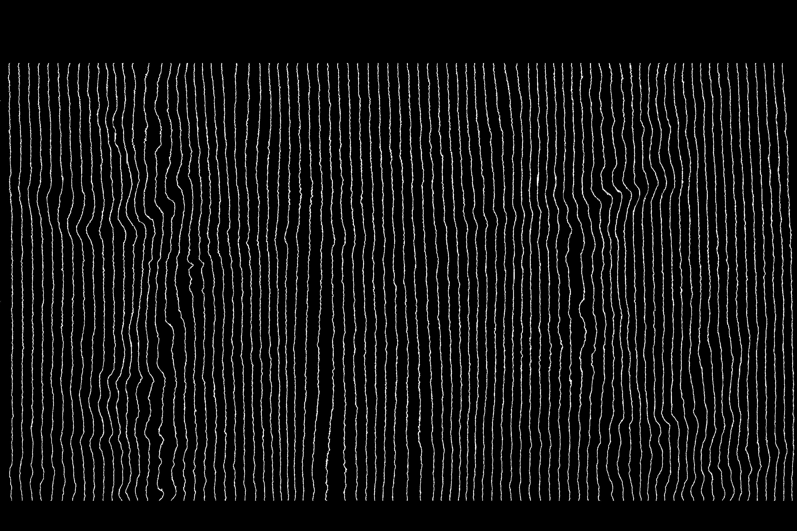
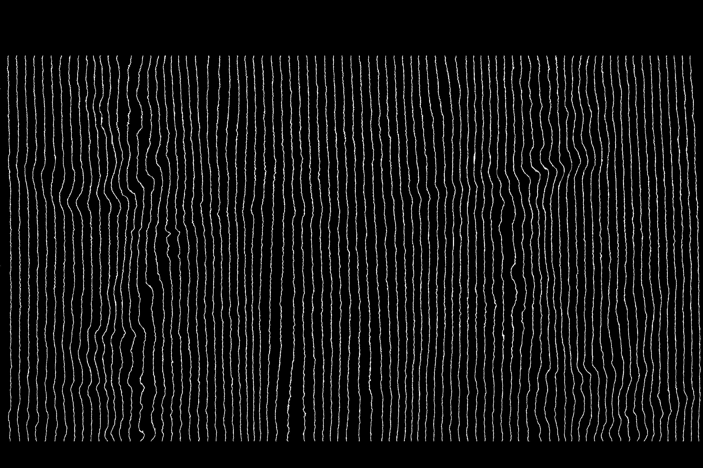

About
Hello,I'm Jake Lawson.
For undergrad, I majored in Engineering Physics at
Cornell University.
Within the Engineering Physics major, I was most
interested in Quantum Mechanics, Mathematical
Physics, and Electricity and Magnetism.
I am continuing my education
at Cornell University
pursuing a Masters of Engineering in
Engineering Physics.
I was also a member of the Varsity Swim team for my four years of undergrad at Cornell. My specialty was distance freestyle and individual medley (IM), which is a combination of all four of the strokes. My main events were the 1650 yd Freestyle (mile), 1000 yd Freestyle, 500 yd Freestyle, and 400 yd IM.
Outside of academics and athletics, I spend my time socializing with friends, gaming, and listening to music or podcasts.
Skills
Research
Throughout my four years as an undergrad at Cornell, I worked as a research assistant at the Laboratory of Plasma Studies (LPS) at Cornell. I worked on mainly on two different projects while at LPS.
Gas Density Measurements
My main project was to investigate the consistency of gas density measurements coming out of a gas puffer. These densities were measured using planar laser induced fluorescence (PLIF).
Fringe Tracing Algorithm
I also worked on the algorithm used to extract fringe traces from interferometry images, which are used to calculate gas and plasma densities for some experiments at LPS.
 

Education
For undergrad, I graduated from Cornell University with a major in Engineering Physics. While pursuing my major, I found my classes in Quantum Mechanics, Mathematical Physics, Electricity and Magnetism, Computer Science, and Economics to be most interesting.
Whithin Quantum Mechanics, I found the rather odd outcomes when compared to Classical Mechanics to be intriguing, as well as the philosophical questions and ideas regarding wave function break down. Learning how the hydrogen atom works at a fundamental level to a high approximation is an experience that I am glad I had.
I took two classes in Mathematical Physics which follow Mathematical Physics by Kusse and Westwig. The most interesting topics covered in these two classes for me were general curvilinear coordiante systems, complex variables and complex functions, and differential equations.
Projects
LekMod C++ Code Developer
LekMod is a small open-source group that manages a game balancing mod for Sid Meier's Civilization 5, which was released in 2010. Civilization 5 is the fifth game in the Civilization series, which is a popular strategy game series. The balancing mod is used by the LekMod community to make Civilization 5 a more competitively even game to play. It does this by making changes to the C++ source code used by the game, among other things.
Swimming
I was a competitive swimmer from third grade through my senior year of college. My specialty was distance freestyle and IM (individual medley). Specifically, the 1650 yd Freestyle (mile), 1000 yd Freestyle, 500 yd Freestyle, and 400 yd IM. From third grade throughout high school, I swam at the Virginia Gators, which is a club swim team in Roanoke, VA. In college, I swam at Cornell University. While at Cornell, I was on the team record breaking 800 free relay, swam the third fastest time in program history in both the 1650 and 1000, as well as the the fifth and seventh fastest times in program history in the 500 free and 400 IM respectively. I also recieved the Hardest Worker award both my freshman year and senior year (only two years the award was given during my four years due to COVID).
| Event | Time |
|---|---|
| 100 Freestyle SCY (relay exchange) | 44.70 |
| 200 Freestyle SCY | 1:39.66 |
| 200 Freestyle SCY (relay exchange) | 1:37.27 |
| 500 Freestyle SCY | 4:26.25 |
| 1000 Freestyle SCY | 9:09.11 |
| 1650 Freestyle SCY | 15:28.01 |
| 200 Backstroke SCY | 1:49.89 |
| 400 IM SCY | 3:53.98 |


Contact
If you would like to get in touch with me for any reason, send me an email at jel323 [at] cornell.edu